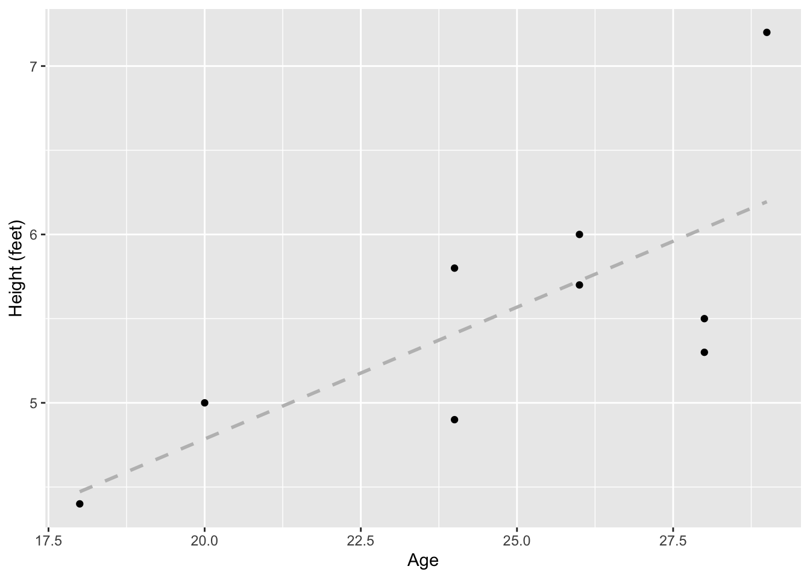

This is a short introduction to R and statistics written to accompany introductory biology courses. This document will prepare you to perform statistic analysis and visualize results using R for most biology labs.
R is a command line program where you interact with it through text (command line) instead of a graphical user interface (e.g., Windows, Excel, etc.) There are two options for running R in this class. In both options, you will not interact directly with R, but through an integrated development environment called Rstudio on your computer or online (the cloud version of Rstudio is called Posit since 2022).
(1) You can download RStudio and install it on your computer. Follow the instructions here to download and install both R and RStudio.
(2) You can also use RStudio online. Sign up for an account here. The “Cloud Free” option will be sufficient. Do not choose the PLUS or other options.
Project setup and file transfer
Local option
If you choose the local option, you should set up a project and a folder that is associated with this project where all files will be stored.
For example, create a folder on your desktop that is called “R_is_fun”. Start RStudio, click File > New Project… and select “Existing Directory” and browse to the folder “R_is_fun”.
Then click “Create Project”. Now you can access all files in the folder “R_is_fun” (without indicating the full pathname) and everything you saved in R will also appear in this folder.
Online option
If you choose the cloud option, you will need to upload/download files to/from the cloud.
On posit.cloud, click “New Project” > New RStudio Project on the upper right. Once the project is deployed, on the lower right panel, click the “upload” button and choose the file from your computer.
To download a file, check the box next to the file, click the “More” > Export… and click “Download”.
The RStudio Interface
Let’s introduce what is being displayed in RStudio. Before we get started, click File > New File > R Script. This will result in a default four-panel interface Figure 1.
Figure 1: The four-panel interface of RStudio.
(A) The upper left is the R script panel. This is where you will write and save your R script or commands. The panel should be saved regularly, which serves as a record of all the commands that you have (or are planning) to run. For example, clicking File > Save and giving it the name “R_is_fun” will save it as “R_is_fun.R” in your working directory. The scripts here are not being read by R until you click the “Run” button on the top right.
(B) The lower left is the R console, which is the innate command line interface of R. A command from the R script above will be displayed here when you click the “Run” button, which is when R “reads” your command. Any output or error from R will also be displayed here. You could type your command directly here, but it will not be saved in the R script.
(C) The upper right is the environment panel. Objects that are read or generated in R will be displayed here, along with any packages that you load and functions that you create.
(D) The lower right is the files panel. It displays the files in your working directory. It also displays figures in a “Plots” tab if your commands result in graphical outputs. The Help tab displays the manual for each package and command.
For a more comprehensive introduction to RStudio, see here.
Using packages
Many packages are available to expand the basic functions of R.
To use these packages, you will need to install them first. Then you can load the package as libraries.
We will install a few packages that will be used in this document. You may be asked to select a mirror to download the packages.
install.packages("ggplot2")
Installing package into '/cloud/lib/x86_64-pc-linux-gnu-library/4.2'
(as 'lib' is unspecified)
install.packages("readxl")
Installing package into '/cloud/lib/x86_64-pc-linux-gnu-library/4.2'
(as 'lib' is unspecified)
install.packages("Rmisc")
Installing package into '/cloud/lib/x86_64-pc-linux-gnu-library/4.2'
(as 'lib' is unspecified)
install.packages("reshape")
Installing package into '/cloud/lib/x86_64-pc-linux-gnu-library/4.2'
(as 'lib' is unspecified)
Then, we will load this packages such that functions from these packages can be used
The following objects are masked from 'package:plyr':
rename, round_any
Importing data into R
Preparing a .csv file from Excel
Your data should be entered and stored in spreadsheet programs such as Microsoft Excel before being imported into R. While R can read Excel files such as .xls and .xlsx, data are typically saved into a simpler text format such as .csv (comma-separated values), where each row appears in a new line and each column is separated by a comma (,) (Figure 2).
Figure 2: Comparison of the same table in (A) Excel and (B) .csv format.
A spreadsheet in Excel can be exported into .csv by clicking File > Save As… and selecting “CSV” in the drop-down manual under “File Format”.
Place the .csv file into your project’s directory (e.g., R_is_fun) or upload it to your project in posit.cloud. Now, you should see the .csv file listed in the lower right panel of RStudio (?@fig-file_panel).
.
Loading a .csv file into R
Note that while the name.csv file is in the file panel, it’s not being loaded into R yet. To do that, in the R script panel, type:
data_name =read.csv(file ="name.csv")# or just # data_name = read.csv("name.csv")
What the code does is load “name.csv” into R and save it as an object called “data_name”. Now the object “data_name” should appear in the environment panel (Figure 3).
Figure 3: A object loaded into R will appear in the environmental panel.
In the environmental panel, you can click on the object to open it in a new tab in the R script panel. Note that doing it actually sends a script to the R console as: View(data_name).
You can also view the object within the R console by calling it directly:
In some cases, you may need to add more arguments to read.csv(). Explore the documentation of this function.
help("read.csv")
You can also search for it in the Help tab in the file panel. Another useful tips is that after you type help(, you can hit the tab key and RStudio will show the possible arguments for. Note also that RStudio will auto-complete the closing bracket for you.
Loading an Excel file directly
You can also directly import an Excel file into R with the help of the readxl package.
If you saved your Excel file as name.xlsx, then the command below will read the first sheet of an Excel file by default.
Note that the above code does not save or overwrite the object data_name because we did not do the data_name = read_xlsx(path = "name.xlsx"). It simply read and output the result into the R console.
Data Visualization
Before you analyze the data, you should take a graphical look at your data. Here’re two common ways.
Bar Graph
A bar graph is used to visualize a continuous variable against a categorical variable.
While R can generate plots using the build-in functions, we will use the package ggplot2 since it provides more ways to customize your plots.
Using data_name we can plot Age against Academic_standing. If you do not remember what are the names of your object, you can use names()
Now you may want to (1) arrange your x-axis in a specific way, (2) get rid of the underscore in the x-axis, and (3) use different colors for each bar. You can do this by:
# Setting Academic_standing as a factor with a specific order of levels.# Note that this code modified data_name. # There may be some cases where you don't want this change to be permanent, # so you can then create a different object. # For example `data_name_sorted = data_name`data_name$Academic_standing =factor(data_name$Academic_standing, level =c("First-year", "Sophomore", "Junior", "Senior"))# The main ggplot command is the same, but we have added:# labs(x = ..., y = ...) to specify axis titles# fill = Academic_standing within aes to assign fill according to Academic_standing using the default color palette. # Note that if you do color = , it will change the color of the boundary of the bar instead.ggplot(data = data_name, aes(x = Academic_standing, y = Age, fill = Academic_standing)) +geom_col() +labs(x="Academic standing")
Note that in your R script, you can use # to add comments and notes. These will not be read by R.
Scatter Plot with a Linear Fit
A scatter plot is used to visualize a the relationship between two continuous variables.
Continuing to use data_name, we can first plot a scatter plot between Height_ft and Age.
ggplot(data = data_name, aes(x = Age, y = Height_ft)) +geom_point() +ylab("Height (feet)") # another way to change axis label
To add a linear fit line, you can use geom_smooth.
The figure above shows the linear fit line in blue and the standard error (SE) in grey. You can remove the SE and change the line to a grey, dashed line (e.g., to indicate a non-significant fit line). We will more probably evaluate the signifiance later under the section
ggplot(data = data_name, aes(x = Age, y = Height_ft)) +geom_point() +geom_smooth(method = lm, se = F, color="grey", linetype="dashed") +ylab("Height (feet)")
`geom_smooth()` using formula = 'y ~ x'

Descriptive statistics
When you first get your data, it will be wise to look at some numeric summaries of your dataframe.
summary will give a summary of each column, depending on whether the column is numeric or categorical.
summary(data_name)
First_name Height_ft Age Academic_standing
Length:9 Min. :4.400 Min. :18.00 First-year:2
Class :character 1st Qu.:5.000 1st Qu.:24.00 Sophomore :3
Mode :character Median :5.500 Median :26.00 Junior :2
Mean :5.533 Mean :24.78 Senior :2
3rd Qu.:5.800 3rd Qu.:28.00
Max. :7.200 Max. :29.00
You can get the summary or specific summary statistics of each column using $:
summary(data_name$Height_ft)
Min. 1st Qu. Median Mean 3rd Qu. Max.
4.400 5.000 5.500 5.533 5.800 7.200
summary(data_name$Academic_standing)
First-year Sophomore Junior Senior
2 3 2 2
Min, Max, Median & Mean
You can also these functions:
min(data_name$Age)
[1] 18
max(data_name$Age)
[1] 29
median(data_name$Age)
[1] 26
mean(data_name$Age)
[1] 24.77778
Quantiles
For quantiles:
quantile(data_name$Age)
0% 25% 50% 75% 100%
18 24 26 28 29
Specific quantile:
quantile(data_name$Age, probs =0.95)
95%
28.6
Standard Deviation and Standard Error
Standard deviation and standard error of the mean using base R:
Standard deviation:
sd(data_name$Age)
[1] 3.734226
Standard error by calculating it from sd():
sd(data_name$Age)/sqrt(length(data_name))
[1] 1.867113
Standard error using the summarySE function in Rmisc
summarySE(data = data_name, measurevar ="Age")
.id N Age sd se ci
1 <NA> 9 24.77778 3.734226 1.244742 2.87038
To output just the se:
summarySE(data = data_name, measurevar ="Age")$se
[1] 1.244742
To summarize within group (e.g., Academic_standing), we can also use the function in Rmisc
Academic_standing N Age sd se ci
1 First-year 2 26.5 3.535534 2.500000 31.765512
2 Sophomore 3 26.0 2.000000 1.154701 4.968275
3 Junior 2 24.0 5.656854 4.000000 50.824819
4 Senior 2 22.0 5.656854 4.000000 50.824819
Inferential statistics
See this link for which statistical test to choose from based on the type of data. The link has example R codes as well! Below are a few commonly used ones.
Linear regression
Linear regression tests the relationship between two continuous variables. The analysis can estimate the a regression line that best fit the data using the least squares method (see here). It also estimates the slope and intercept of the linear regression line and allows testing whether they are significantly different from zero.
In R the lm function can fit a number linear models, including linear regression.
To estimate the linear model to predict Height_ft (the response or dependent variable) by Age (the predictor or independent variable):
lm_HA =lm(formula = Height_ft ~ Age, data = data_name)lm_HA
Call:
lm(formula = Height_ft ~ Age, data = data_name)
Coefficients:
(Intercept) Age
1.6538 0.1566
The output of the linear model shows the coefficients intercept and slope (under “Age”). But we can get much more out of lm_HA using summary().
summary(lm_HA)
Call:
lm(formula = Height_ft ~ Age, data = data_name)
Residuals:
Min 1Q Median 3Q Max
-0.7379 -0.5115 -0.0247 0.2753 1.0056
Coefficients:
Estimate Std. Error t value Pr(>|t|)
(Intercept) 1.65378 1.38315 1.196 0.2708
Age 0.15657 0.05527 2.833 0.0253 *
---
Signif. codes: 0 '***' 0.001 '**' 0.01 '*' 0.05 '.' 0.1 ' ' 1
Residual standard error: 0.5837 on 7 degrees of freedom
Multiple R-squared: 0.5341, Adjusted R-squared: 0.4676
F-statistic: 8.026 on 1 and 7 DF, p-value: 0.0253
Under “Coefficients”, it shows a t-test of whether the intercept and slope (Age) is significantly different from zero.
In the last three lines, it shows:
Residual standard error: lower means better fit
Degrees of freedom: the maximum number of logically independent values
Multiple R-squared: the percentage of the response variable variation that a the model explains
Adjusted R-squared: adjusted for the number of terms in the model
Statistics of a F-test that evaluates the fit of the model.
Although the F-test is at the end, it should be examined first to determine whether the linear model fits the data. Only when the model is well fitted, should you further interpret the significance of the intercept and slope.
In this example, the linear regression is significant because the p-value of the F test is lower than 0.05 (p = 0.0253), so we can continue to examine the intercept and slope.
The slope is 0.35657 (under “Estimate” in “Coefficient”) and the t-test indicate that it is significantly different from zero (p = 0.0253). Note that this p-value is the same when there is only one predictor variable. In multiple regression, there will be separate t-tests for each predictor variable.
Therefore we can write this to summarize the result and provide the statistical support: There is a positive relationship between height and age (slope = 0.357, F = 8.026, d.f. = 1 and 7, p = 0.025).
A two sample T-test compares the means of two samples. The predictor (independent) variable is nominal and has two categories. The response (dependent) variable is continuous. In other words, a two sample t-test tests whether the two categories of the predictor variable affect the continuous response variable.
We will create a new variable called Age_group: A when Age <= 25 and B when Age > 25.
You can View(data_name) to check that we now have a new column in data_name.
To test whether Height_ft is different between Age_group A and B, or whether Age_group affect Hr\eight_ft, we can use:
t.test(Height_ft~Age_group, data = data_name, alternative ="two.sided", var.equal =FALSE)
Welch Two Sample t-test
data: Height_ft by Age_group
t = -2.0638, df = 6.9999, p-value = 0.07792
alternative hypothesis: true difference in means between group A and group B is not equal to 0
95 percent confidence interval:
-1.9633556 0.1333556
sample estimates:
mean in group A mean in group B
5.025 5.940
alternative can also be “greater” or “less” if you have an a priori reason to test a directional difference between groups.
In this case, the t-test is not statistically significant since the p-value is 0.07792.
Visualization
You can plot the continuous variable from two groups in a number of ways.
One way is to use a boxplot:
ggplot(data = data_name, aes(x = Age_group, y = Height_ft)) +geom_boxplot() +labs(x ="Age group", y ="Height (feet)")
You can even overlap your datapoints on top of the boxplot:
ggplot(data = data_name, aes(x = Age_group, y = Height_ft)) +geom_boxplot() +geom_jitter(width =0.1, height =0) +# this allows overlapping points to be seenlabs(x ="Age group", y ="Height (feet)")
ANOVA
Analysis of variance (ANOVA) is used similar to the t-test, but when the predictor variable has three or more categories.
To test whether Academic_standing affects Age:
anova_model =aov(formula = Age ~ Academic_standing, data = data_name)summary(anova_model)
Df Sum Sq Mean Sq F value Pr(>F)
Academic_standing 3 27.06 9.019 0.534 0.679
Residuals 5 84.50 16.900
Visualization
Similar to the t-test, we can plot the data used for ANOVA:
ggplot(data = data_name, aes(x = Academic_standing, y = Age)) +geom_boxplot() +geom_jitter(width =0.1, height =0) +# this allows overlapping points to be seenlabs(x ="Academic standing", y ="Age")
Note that showing the data points gives a more complete representation of our data. If you see only boxplot, you could imagine having a lot of data. But in fact, there are only 2-3 data point for each predictor variable. Some of them are even laying quite far apart from each other.
Chi-square - Goodness of Fit test
There are two types of Chi-Square tests, which are used when both the predictor and response variables are nominal.
The goodness of fit Chi-square test is used to test whether the observed result (i.e. collected during an experiment) is significantly different than the “expected” result.
For example, let’s first generate a count of Age_group:
We can then test whether the observed distribution of Age_group is equally distributed among the two groups (i.e., 1:1) uisng chisq.test().
chisq.test(x = obs_age_group)
Warning in chisq.test(x = obs_age_group): Chi-squared approximation may be
incorrect
Chi-squared test for given probabilities
data: obs_age_group
X-squared = 0.11111, df = 1, p-value = 0.7389
Again, the null hypothesis is that the groups are equally distributed. The p-value is > 0.05, which means that we have failed to reject the null hypothesis. Therefore, our observed distribution of Age_group is not significnatly different from 1:1.
If there is a priori reason that the distribution should be, for example, 3:1, we can modify the code to test this:
chisq.test(x = obs_age_group, p =c(3/4,1/4))
Warning in chisq.test(x = obs_age_group, p = c(3/4, 1/4)): Chi-squared
approximation may be incorrect
Chi-squared test for given probabilities
data: obs_age_group
X-squared = 4.4815, df = 1, p-value = 0.03426
In this second test, the p-value is < 0.05, so we can reject the null hypothesis. Hence the distribution is significantly different from 3:1.
Visualization
You can plot the data for a goodness of fit Chi-square test by using the raw data in data_name.
The Contingency test (or the Test of Independence), tests if the difference between two groups (e.g., Age_group) is significantly different depending on (contingent on) another variable (e.g., Academic_standing). Or, put another way, you might want to determine if the frequency of outcomes for one set of observations matches those for another set of observations.
We will first reshape our data into a contingency table:
The p-value is > 0.05. So we have failed to reject the null hypothesis. Hence the two variable are independent. In other words the distribution of Age_group is not dependent or affected by Academic_standing.


 .
.